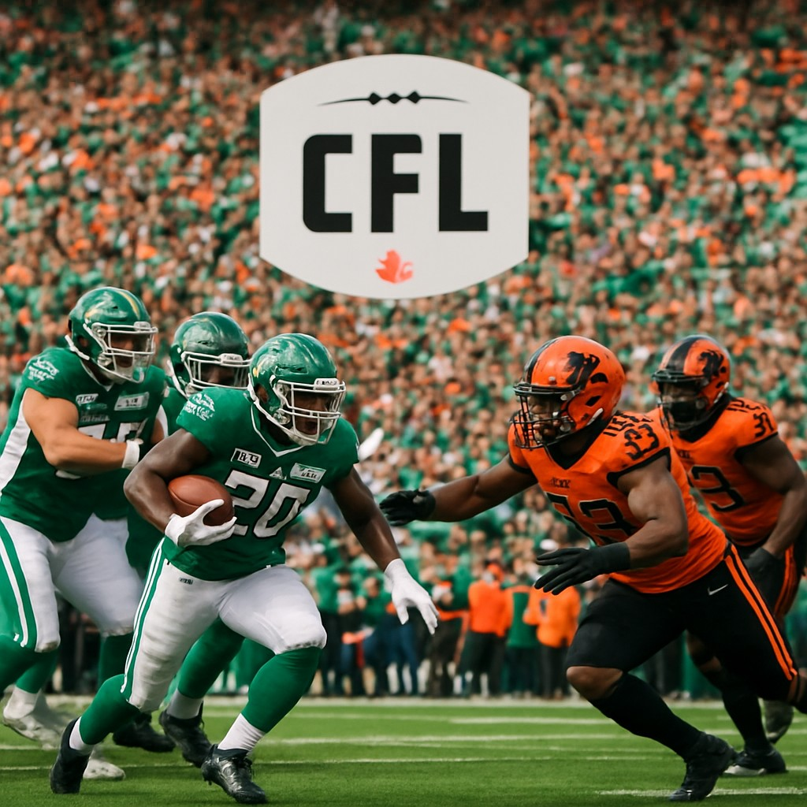

The Saskatchewan Roughriders and BC Lions face off this week in a matchup that could shape the early season trajectory for both teams. With the Roughriders sitting at a slight edge in the betting market, there’s a compelling opportunity for value in the moneyline.
Game Preview
Scheduled for June 14, 2026, at 1:00 AM ET, this contest between the Roughriders and Lions promises to be a battle of two teams with different strengths and aspirations. The Roughriders, coming into the game with a modest +125 moneyline according to Sports Select, are seen as the slight favorites in this matchup. Meanwhile, the Lions are priced at +140, suggesting they're viewed as a bit of an underdog but still offering attractive odds for those willing to take on the risk.
Betting Analysis
At first glance, the moneyline might seem like a straightforward bet, but the numbers tell a more nuanced story. The Roughriders’ +125 odds suggest they’re expected to win, but the relatively narrow spread indicates a tight game is likely. The Lions, at +140, offer a higher return for those who believe they can pull off an upset.
In terms of betting strategy, the key here is understanding the value in the moneyline rather than jumping straight to the spread. While the spread line shows both teams at -125 (a 50/50 proposition), the moneyline reflects the perceived difference in team strength. The Roughriders' lower payout suggests bookmakers have them slightly favored, but the Lions’ higher odds provide a better potential return if they can capitalize on their offensive capabilities.
Why This Bet Matters
For punters looking for a safer play with moderate upside, the Roughriders at +125 offer solid value. The spread line of -125 for both teams indicates a competitive game, which means both teams are likely to score and keep it close. However, if you're looking for a higher reward, backing the Lions at +140 provides an appealing risk-reward ratio.
Given the current odds and the teams' relative standings, this game presents an excellent opportunity to find value in the moneyline. Whether you're playing it safe or chasing a bigger win, both sides offer something for different types of bettors.
Final Thoughts
As the CFL continues to build momentum, games like this one serve as important indicators of how teams are shaping up for the season ahead. The Roughriders and Lions bring distinct styles to the field, making for an intriguing matchup. With the moneyline offering solid value for both sides, this game is worth watching closely for those who want to place a strategic wager.
Whether you choose to back the favorites or look for an underdog play, the betting landscape offers compelling options for all types of gamblers.